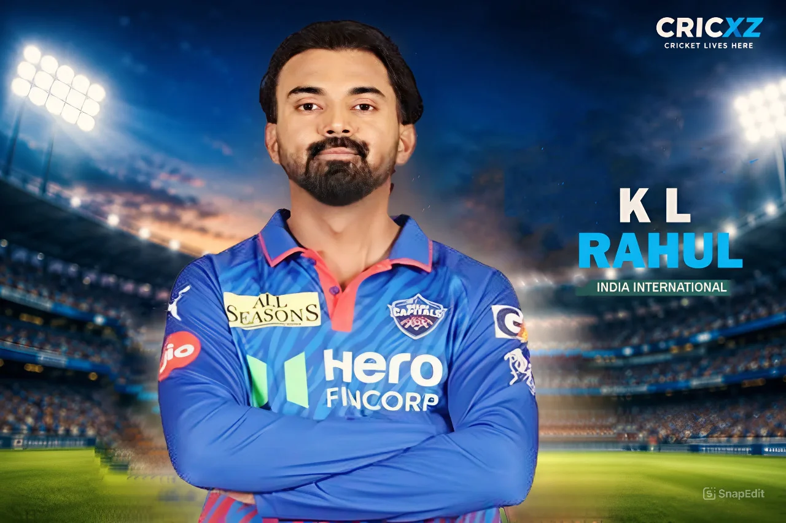

ODI Snapshot
- Matches
- 101
- Runs
- 3,541
- Highest score
- 129*
- Batting average
- 51.32
- Strike rate
- 92.38
- Hundreds
- 9
- Fifties
- 20

KL Rahul is an India wicketkeeper-batter who has scored centuries in Tests, ODIs and T20Is. This profile separates his international records from his IPL career and uses the dated statistics snapshot explained below.
At New Chandigarh on 3 October 2026, Rahul made 129 not out from 87 balls as India reached 351/7. West Indies chased the target with five wickets remaining. His unbeaten hundred is included in the 3 October snapshot below; this box is historical match context, not a live update.
Career-statistics cutoff: 3 October 2026, including his unbeaten 129 in the West Indies ODI. Reconciled: 16 November 2026. IPL figures cover his career through the completed 2026 season.
Method: Career tables and dated innings were compared, with rate statistics recalculated from runs, balls and dismissals. Later international appearances are excluded. Exact sources and calculations are provided below.
Rahul made his Test debut in December 2014 and his ODI debut in June 2016, scoring an unbeaten hundred in that first ODI. He went on to make centuries in all three international formats. His ability to open or bat in the middle order is a useful distinction when reading records from different stages of his career.
At the displayed cutoff, the Test table records 4,288 runs with a highest score of 199. His ODI record stands at 3,541 runs in 101 appearances, averaging 51.32. Average uses dismissals rather than appearances: an unbeaten innings adds runs without adding a dismissal.
The IPL is a separate franchise competition, so its 5,815 career runs are not included in an international total. His IPL high score of 152* came for Delhi Capitals against Punjab Kings in April 2026; that verified innings remains distinct from his earlier 132* for Punjab in 2020.
26 December 2014
Against Australia at Melbourne Cricket Ground (MCG).
11 June 2016
Against Zimbabwe at Harare Sports Club (Scored an unbeaten 100 on debut).
11 April 2013
For Royal Challengers Bangalore vs Kolkata Knight Riders.
Became the first Indian batter to score a century on his One Day International debut (100* vs Zimbabwe in 2016).
Has scored international hundreds in Tests, ODIs and T20Is, reflecting his experience across different batting roles.
Scored a magnificent 129 against England at Lord's in 2021, cementing his name on the historic Honours Board.
Scored 152* for Delhi Capitals against Punjab Kings on 25 April 2026. This innings surpassed his previous IPL best of 132* against RCB in 2020.
IPL correction, 16 November 2026: The IPL highest-score entry has been corrected from 132* to 152*, supported by the official match report. The achievement card now describes the dated innings rather than presenting the older 132* as the current record. The historical cutoff remains 3 October 2026; the additional rate-statistics correction is documented below.
Statistics correction, 16 November 2026: ODI average and strike rate are corrected to 51.32 and 92.38. Test strike rate is recalculated as 52.10, and IPL average and strike rate as 46.15 and 139.15. The ambiguous combined international/franchise total has been removed. The October match is now explicitly historical, and its result is stated alongside the individual innings.
How the rates reconcile: ODI: 3,541 runs from 3,833 balls, with 91 innings and 22 not-outs. Test: 4,288 runs from 8,230 balls, with 122 innings and five not-outs. IPL: 5,815 runs from 4,179 balls, with 150 innings and 24 not-outs. Average is runs divided by innings minus not-outs; strike rate is runs per 100 balls. Displayed rates are calculated to two decimal places; where source rounding differs, these underlying counts determine the figures here.
Cutoff versus review date: Sources were checked on 16 November 2026. The later unbeaten ODI innings of 3 from five balls and 26 from 38 balls are excluded from this historical snapshot. An asterisk means not out. These cards are not a live career counter.